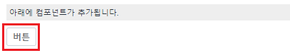
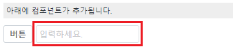

'$p.dynamicCreate' 메소드를 사용하여 UI 컴포넌트를 동적으로 생성하고 추가하는 예제입니다.
스크립트로 Trigger를 생성하고 화면에 표시하기
스크립트로 InputBox를 생성하고 화면에 표시하기
1
STEP 1: 'Trigger 생성하기' 버튼을 클릭합니다.
화면에 Trigger 컴포넌트가 추가됩니다.
Image 1.브라우저(Chrome) 실행 예시

1
STEP 1: 'Input 생성하기' 버튼을 클릭합니다.
화면에 Input 컴포넌트가 추가됩니다.
Image 2.브라우저(Chrome) 실행 예시

동적으로 생성할 컴포넌트가 추가될 부모 컴포넌트가 있어야 합니다. '$p.dynamicCreate' 메소드는 부모 컴포넌트 객체를 받기 때문에 body에 추가할 수 없습니다. 예제에서는 id 속성이 'grp_target'인 Group을 부모 컴포넌트로 지정하였습니다.
동적으로 생성할 컴포넌트의 ID는 중복이 되어서는 안됩니다.
추가할 컴포넌트명(pluginName)은 컴포넌트의 Plugin Name 에 자세히 나와있습니다.
'$p.dynamicCreate' 메소드를 사용하여 스크립트를 작성합니다. 이 메소드의 두 번째 인자에 생성할 컴포넌트의 PluginName을 설정합니다. 세부 설정은 아래의 스크립트에 작성되었습니다.
Example 1.Script
//중복되지 않는 ID 생성을 위한 스크립트 var objDate = new Date(); var strID = "btn_ex_" + objDate.getDate() + "_"+ objDate.getTime(); //버튼(trigger) 생성 var _comp = $p.dynamicCreate( strID, "trigger", //생성할 컴포넌트의 pluginName { style : "" ,className : "btn_cm mr_def" }, grp_target //생성(추가)할 위치의 컴포넌트 객체 ); //생성된 trigger의 value 할당. _comp.setValue("버튼");
'$p.dynamicCreate' 메소드를 사용하여 스크립트를 작성합니다. 이 메소드의 두 번째 인자에 생성할 컴포넌트의 PluginName을 설정합니다. 세부 설정은 아래의 스크립트에 작성되었습니다.
Example 2.Script
//중복되지 않는 ID 생성을 위한 스크립트 var objDate = new Date(); var strID = "ipt_ex_" + objDate.getDate() + "_"+ objDate.getTime(); //input 생성 var _comp = $p.dynamicCreate( strID, "input", //생성할 컴포넌트의 pluginName { style : "min-width:80px; min-height:20px;", className : "mr_def", placeholder : "입력하세요.", }, grp_target //생성(추가)할 위치의 컴포넌트 객체 (ID 문자열이 아님을 주의합니다) );